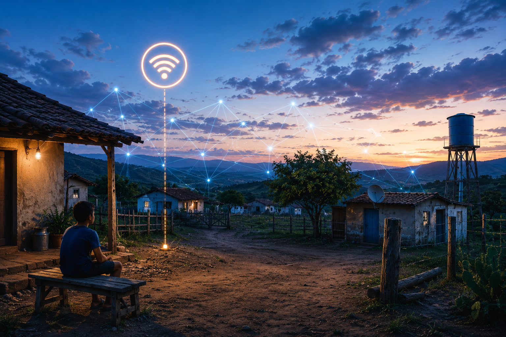
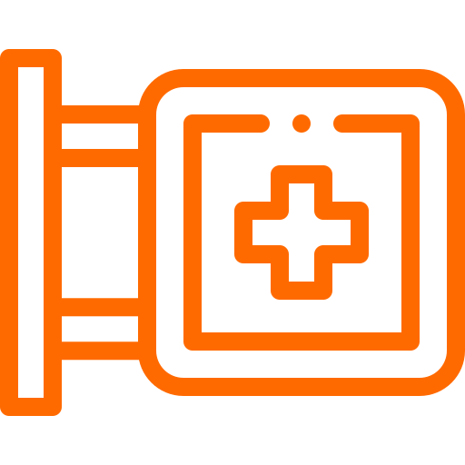
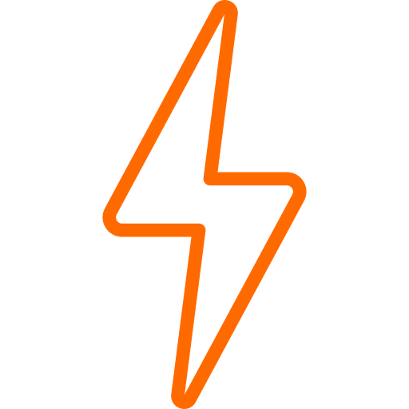
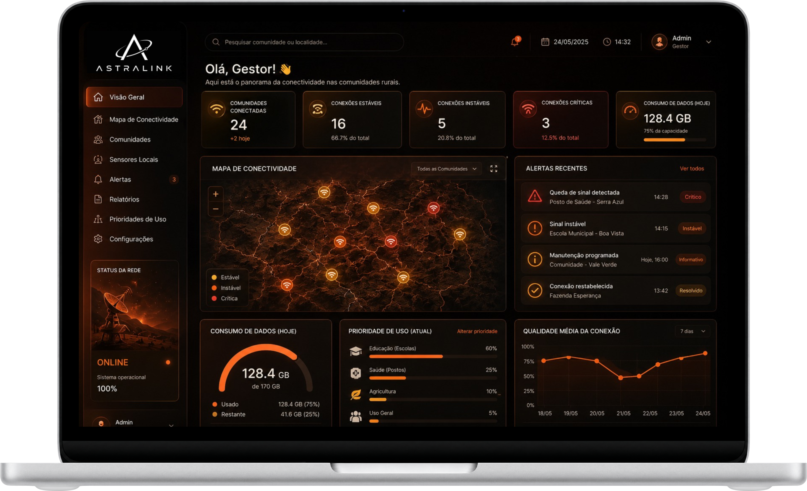

O Problema
Comunidades rurais enfrentam falhas frequentes de conectividade
Isso afeta educação, saúde e acesso a serviços digitais
Tecnologia
Internet via satélite conecta regiões remotas
Sensores IoT monitoram a qualidade da conexão
Objetivos
Detectar Falhas
Identificar problemas rapidamente.
Gerar Dados
Fornecer informações atualizadas.
Apoiar Gestores
Facilitar a tomada de decisões.
Público-Alvo
Escolas

Postos de Saúde
Produtores Rurais
Prefeituras
Benefícios
Monitoramento contínuo

Resposta rápida
Inclusão digital
Dados em tempo real

Aplicação no Dia a Dia
Gestores acompanham a conectividade em tempo real
Alertas ajudam a resolver problemas rapidamente